南京是六朝古都，是一座拥有悠久历史和深厚文化底蕴的城市。它就像一本大书，读来让人荡气回肠，这本书里的旧事数不尽数，需要细细品味……
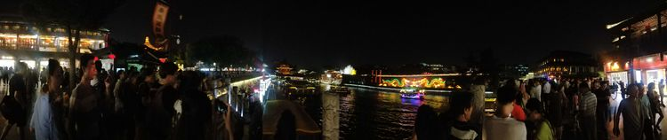不夜，秦淮河...
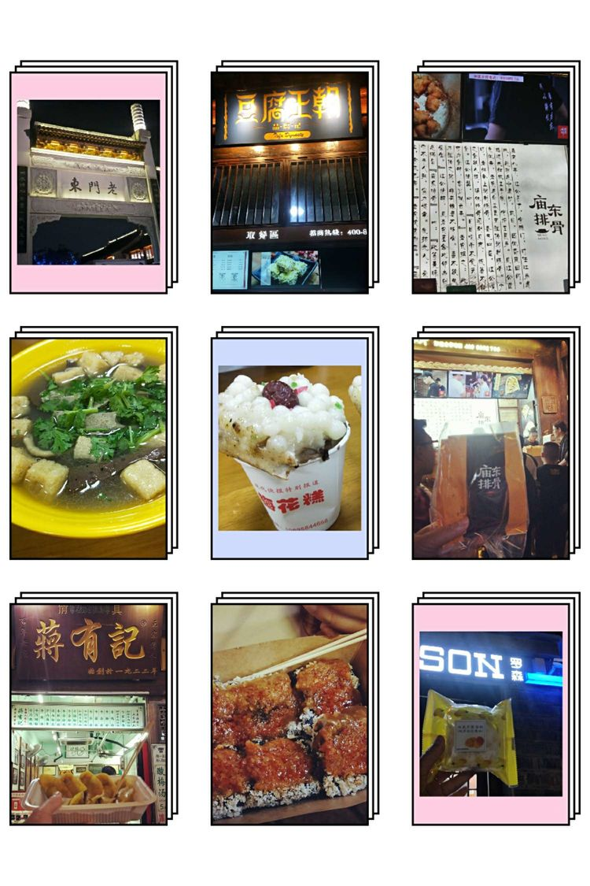到了第一站去老门东觅食，把之前在网上攻略好的美食一一打卡
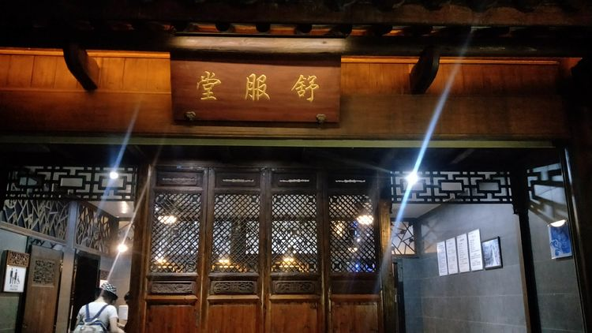“舒服堂”WC的大名
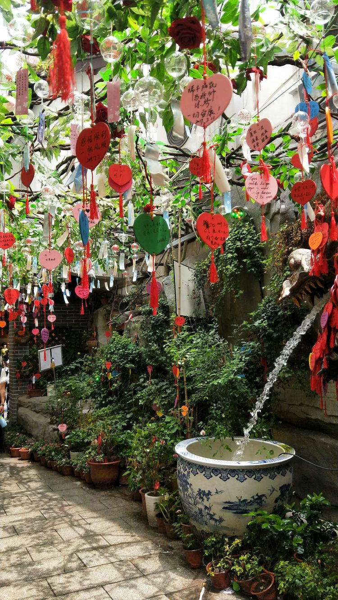清晨起床，我们骑单车围绕着夫子庙、老门东、明城墙、雨花台、大报恩寺、秦淮河等等这些地方都转了一圈，南京的共享单车还是非常给力的，到处可见，这几天幸亏有了单车，要不然累惨了
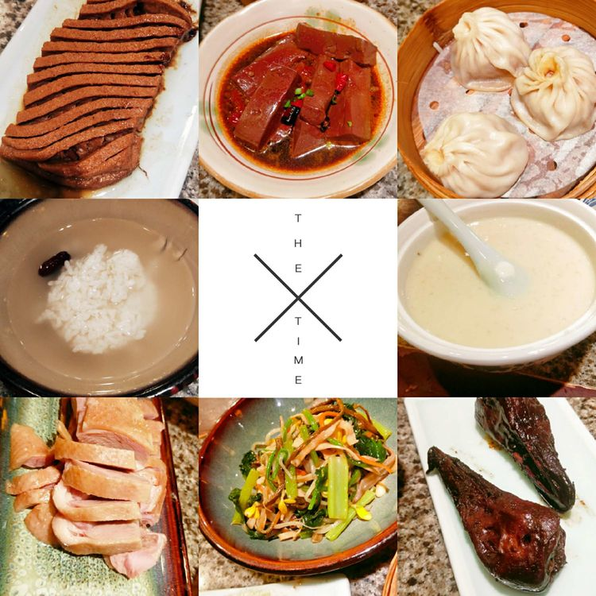逛完之后，今天的重要安排是吃一顿南京大排档，我们十点半就过来排队了，人依然很多，十一点左右进去的，一会儿功夫所有桌子全坐满。最好喝的是美龄粥，盐水鸭很一般，我们都吃不惯，我们吃完感觉没有期待中的那么满意，也可能没有点到好吃的...

吃饱后逛了个瞻园，这个园子从外边看门头很小，进去之后别有洞天，推荐,是我们喜欢的苏式建筑
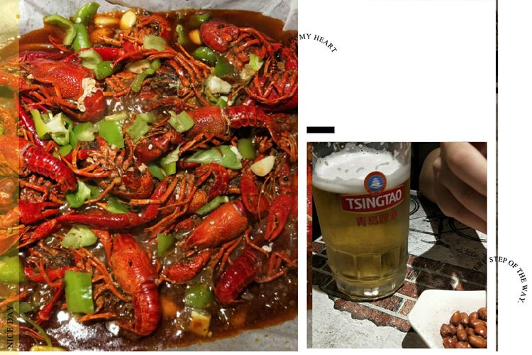晚上老门东附近找地方吃的小龙虾，喝了家长滴啤酒，味道完全不一样，南京的青岛啤酒味道很淡; 第二顿:炸串，我很喜欢这个味道，比我们这边的炸串好吃(于先生不喜欢，只有我自己吃的)
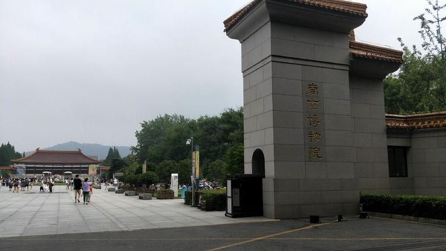第三天行程比较轻松，参观了南京博物院(博物院很大，建议拿出三个小时参观)逛了新街口，发现2号地铁站下边有好多美食
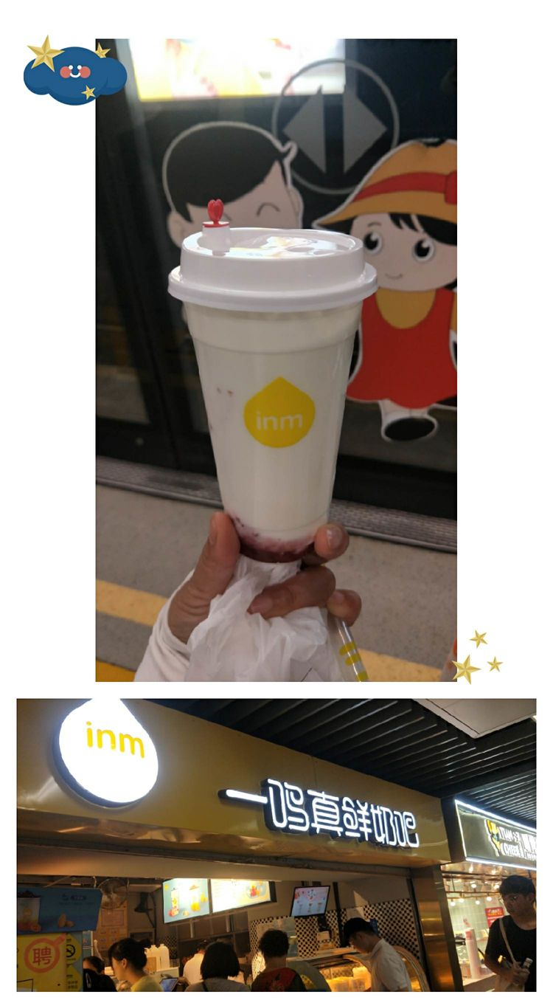地铁站买的酸奶，超好喝，后边又连续买过两次，发现南京比苏州便宜一块钱
第四天我们去了苏州，这两个城市文化差异较大，一到苏州就看感受到了小桥流水的江南风情，给人的感觉特别静心，苏州博物馆没有去成，需要提前好几天在网上预约，我都去了隔壁的苏州园林博物馆
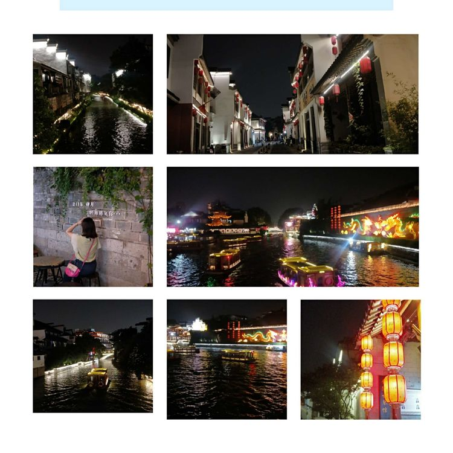 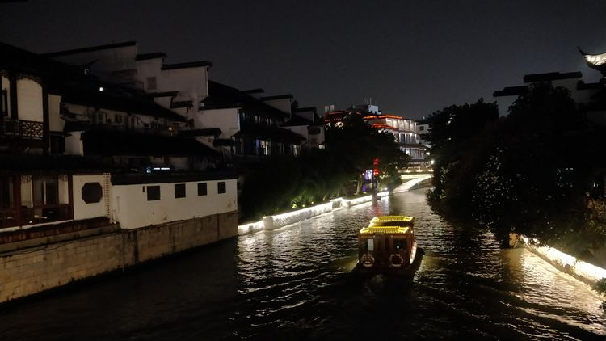饭后游览了秦淮河夜景，还是晚上的秦淮河才能显示出它的美...
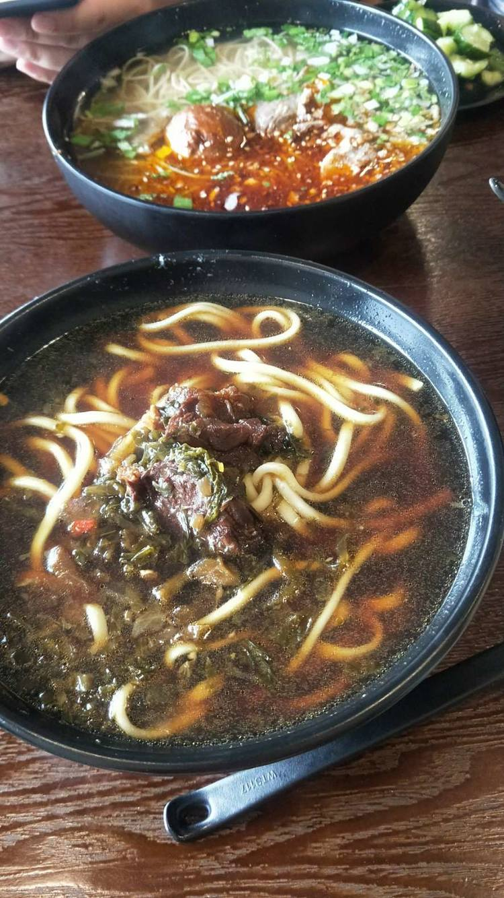这几天吃过的最好吃的面，没有之一，这是苏州老城区里边的“曹姐面馆”店家貌似是学美术的，店里装修的很有特色，我们吃面的时候，她在教育她闺女，声音很大，本来以为她是个例，但是晚上到另一家饭店吃饭的时候，服务员声音也很大，苏州人民的声线很好
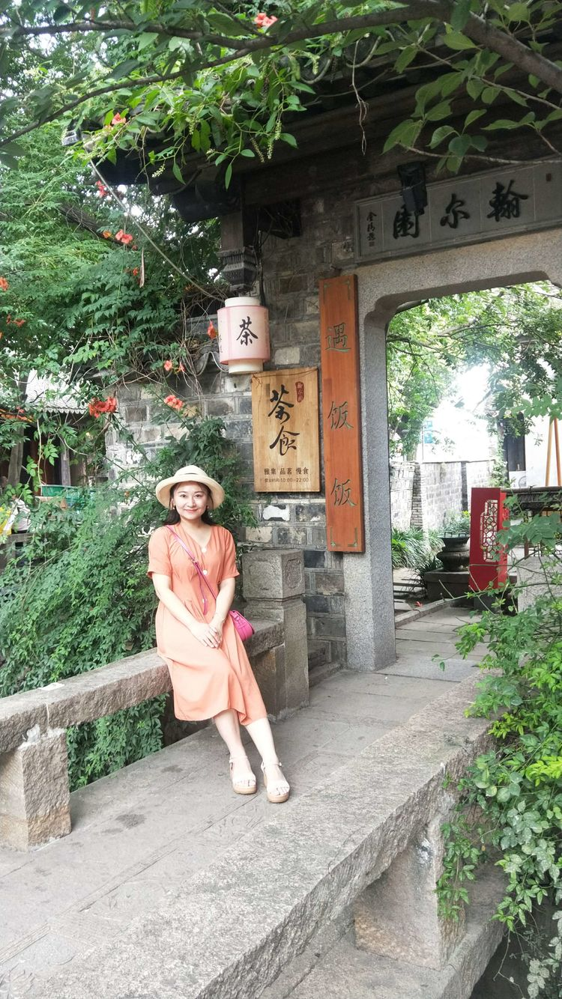电视剧《都挺好》中，石老板的店...
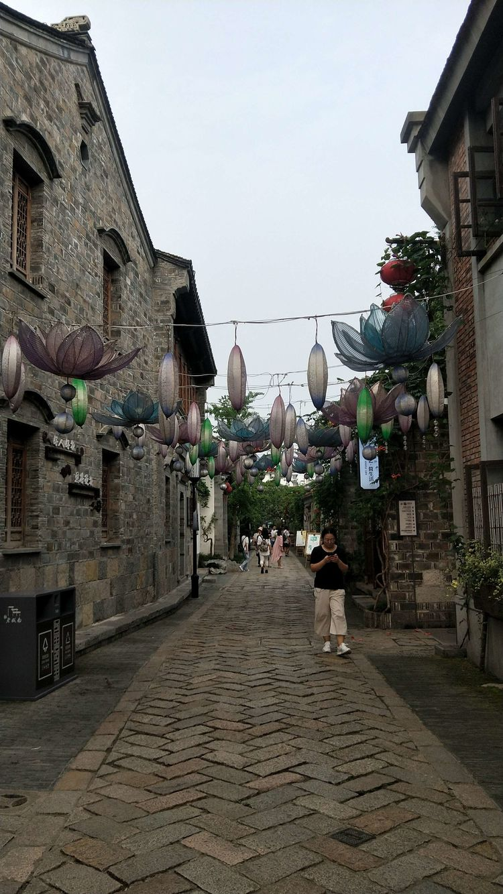 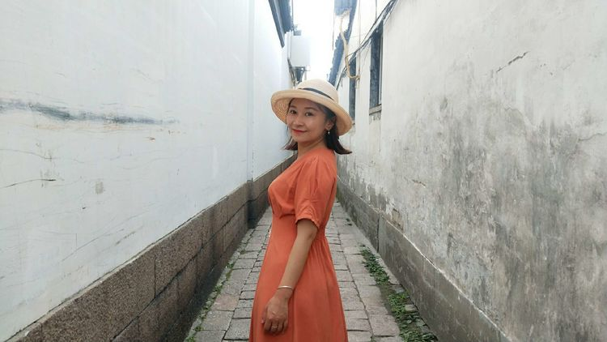平江路适合点一杯饮料，坐在店里，发呆一下午，静静的感受这种美
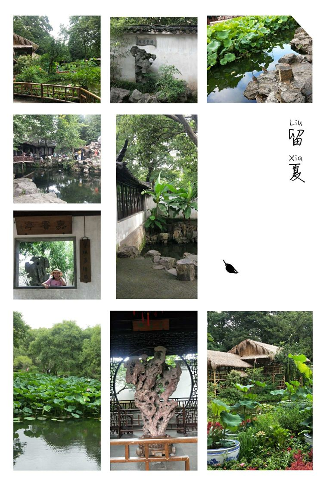打卡拙政园，重点说明，需要提前在网上买好票，现场买票人实在是太多太多，我们是早晨七点四十进去的，那时候人不多，九点半出来时候已经很多人了
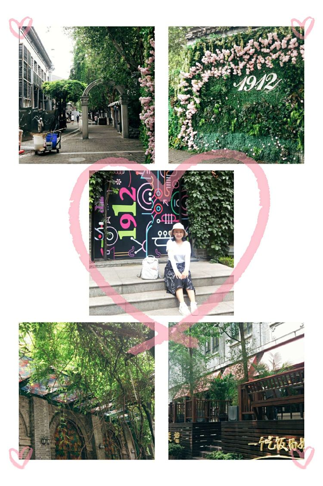1912街区，适合年轻人玩的地方，适合拍照
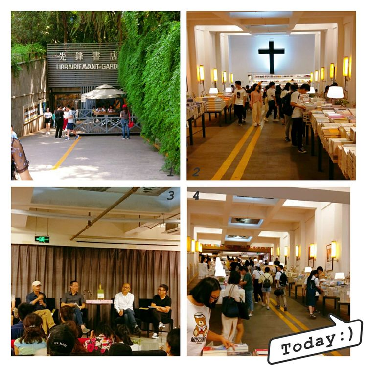先锋书店，被称为全国最美书店，果然挺美
完美旅途，Ending.....